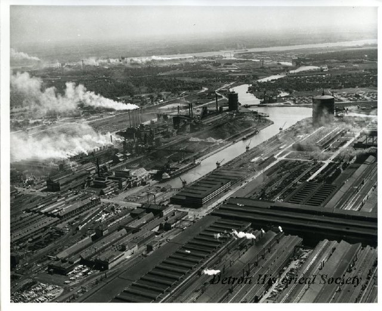
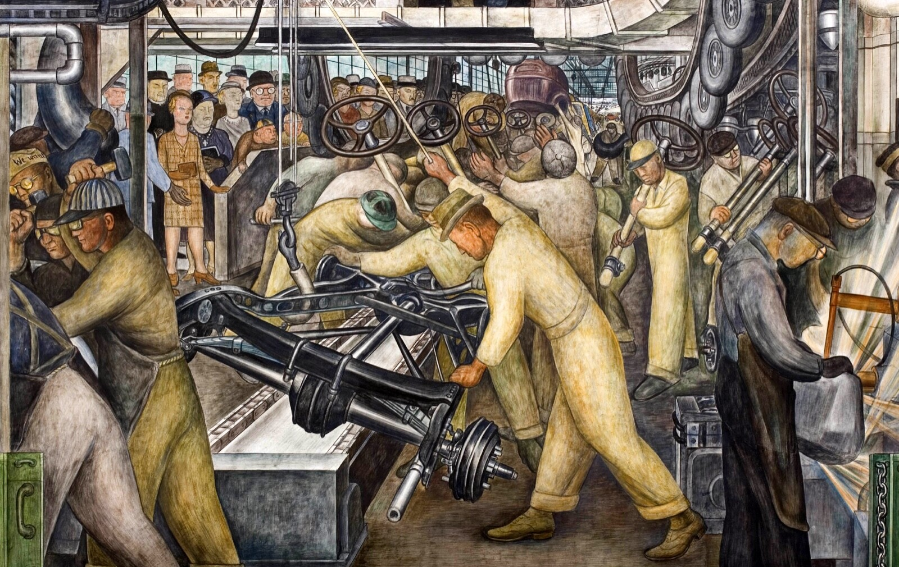
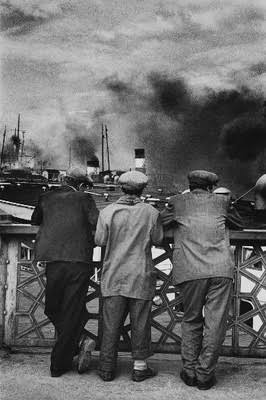

ÇALIŞMA VE TOPLUM · GÖRSEL TEMSİLLER
Etkinlik: “Görseli Oku” · Grup çalışma kâğıdı · Süre: yaklaşık 30 dakika
Amaç
Bir görsel, gerçekliği olduğu gibi göstermez; birinin bakışını ve amacını taşır. Bu etkinlikte elinizdeki görseli bir kaynak gibi okuyacak, görselin hangi mesajı verdiğini ve neyi dışarıda bıraktığını tartışacaksınız.
Nasıl İşleyecek?
| Bölüm | Süre | Ne yapacaksınız? |
|---|---|---|
| Giriş | 3 dk | Eğitmen etkinliği ve kuralları anlatır, gruplara kartlar dağıtılır. |
| Grup çalışması | 10 dk | Kartınızdaki görseli inceleyin, dört soruyu birlikte tartışın ve cevaplarınızı yazın. |
| Sunumlar | 10 dk | Her grup en fazla 2 dakika sunar. Sunumu bir grup üyesi yapar; dinleyen gruplar not alır. |
| Ortak değerlendirme | 5 dk | Görseller arasındaki farklar ve benzerlikler birlikte tartışılır. |
| Çıkış notu | 2 dk | Her öğrenci kâğıdın son sayfasındaki tek cümlelik notu doldurur. |
Grup Çalışma Kuralları
- Gruplar 4–5 kişiden oluşur. Rol dağılımı: sunucu, yazıcı, zaman tutucu, görsel okuyucu.
- Önce görsele sessizce 1 dakika bakın; ancak ondan sonra tartışmaya başlayın.
- Cevaplarınızda mutlaka görselden somut bir ayrıntıya dayanın (işçilerin kameraya bakması, makineler vb.).
- “Doğru–yanlış” cevap yoktur ama gerekçesiz cevap da kabul edilmez. Her yorumun nedenini söyleyin.
- Bilmediğiniz bir şeyi varsayım olarak belirtin: “Bu fotoğrafı bir şirketin çektirmiş olabileceğini düşünüyoruz çünkü…”
Hatırlatma: Dört Soru Çerçevesi
Kim üretti? · Kimin için ve neden? · Ne gösteriliyor, ne gösterilmiyor? · Nasıl gösteriliyor?
Grup Kartı 1
Künye: Fotoğraf · ABD · 20. yüzyılın başı · Ulusal Çocuk Emeği Komitesi (NCLC) arşivinden
Lewis Hine — iplik fabrikasında çalışan çocuklar

Grup üyeleri: ______________________________________________________________
| Soru | Grubumuzun cevabı |
|---|---|
| 1. Kim üretti? | |
| 2. Kimin için ve neden? | |
| 3. Ne gösteriliyor, ne gösterilmiyor? | |
| 4. Nasıl gösteriliyor? |
Sunum için tek cümle: Bu görsel bize ______________________________ gösteriyor, ancak ______________________________ göstermiyor.
Grup Kartı 2
Künye: Fotoğraf · River Rouge fabrikası, ABD · 1917–1941 arasında şirketin fotoğraf biriminde çekilmiş
Ford Foto-Film Departmanı — River Rouge fabrikası

Grup üyeleri: ______________________________________________________________
| Soru | Grubumuzun cevabı |
|---|---|
| 1. Kim üretti? | |
| 2. Kimin için ve neden? | |
| 3. Ne gösteriliyor, ne gösterilmiyor? | |
| 4. Nasıl gösteriliyor? |
Sunum için tek cümle: Bu görsel bize ______________________________ gösteriyor, ancak ______________________________ göstermiyor.
Grup Kartı 3
Künye: Duvar resmi · Detroit, ABD · 1932–33
Diego Rivera — Detroit Industry

Grup üyeleri: ______________________________________________________________
| Soru | Grubumuzun cevabı |
|---|---|
| 1. Kim üretti? | |
| 2. Kimin için ve neden? | |
| 3. Ne gösteriliyor, ne gösterilmiyor? | |
| 4. Nasıl gösteriliyor? |
Sunum için tek cümle: Bu görsel bize ______________________________ gösteriyor, ancak ______________________________ göstermiyor.
Grup Kartı 4
Künye: Afiş · Türkiye · 2014 · Sendika tarafından hazırlanmış
DİSK 1 Mayıs afişi (2014)

Grup üyeleri: ______________________________________________________________
| Soru | Grubumuzun cevabı |
|---|---|
| 1. Kim üretti? | |
| 2. Kimin için ve neden? | |
| 3. Ne gösteriliyor, ne gösterilmiyor? | |
| 4. Nasıl gösteriliyor? |
Sunum için tek cümle: Bu görsel bize ______________________________ gösteriyor, ancak ______________________________ göstermiyor.
Grup Kartı 5
Künye: Fotoğraf · İstanbul · 20. yüzyılın ikinci yarısı
Ara Güler — İstanbul’da Alınteri

Grup üyeleri: ______________________________________________________________
| Soru | Grubumuzun cevabı |
|---|---|
| 1. Kim üretti? | |
| 2. Kimin için ve neden? | |
| 3. Ne gösteriliyor, ne gösterilmiyor? | |
| 4. Nasıl gösteriliyor? |
Sunum için tek cümle: Bu görsel bize ______________________________ gösteriyor, ancak ______________________________ göstermiyor.
Çıkış Notu (Bireysel)
Bugün gördüğünüz görsellerden birini seçin. Bu görselin neyi gösterdiğini ve neyi gizlediğini tek cümleyle yazın.
Seçtiğim görsel: ________________________________________________
Gösterdiği: ______________________________________________________________________________
Gizlediği: _______________________________________________________________________________
Düşünmeye Devam Edin
Kendi çevrenizdeki bir işi tek bir fotoğrafla anlatsaydınız neyi çerçeveye alır, neyi dışarıda bırakırdınız?